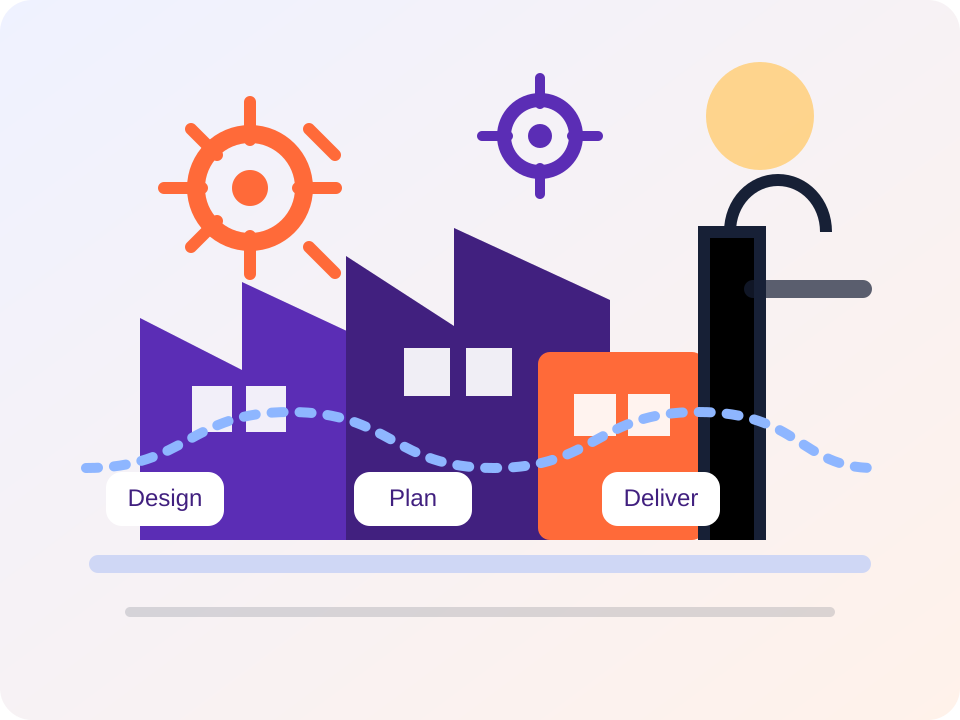

A. End-to-end Processes for Manufacturers
Trace value streams from product design and sourcing through planning, production, fulfillment, service, and retirement.
Manufacturing Community of Practice
Welcome to the Manufacturing Community of Practice resource hub. Explore core manufacturing processes, production principles, capabilities, industries, reusable assets, ISV solution areas, and project lifecycle guidance.

Welcome
The Manufacturing Community of Practice (CoP) brings together reusable talking points, operating models, and delivery guidance for solution teams working with discrete and process manufacturers. Start here, then move into the seven section pages for deeper reference material.
Browse the major sections
Trace value streams from product design and sourcing through planning, production, fulfillment, service, and retirement.
Compare Make to Stock, Make to Order, Configure to Order, and Engineer to Order operating models.
Review the data, planning, execution, control, and governance capabilities that enable manufacturing transformation.
Adapt the discussion for industrial equipment, consumer goods, life sciences, chemicals, and construction contexts.
See where packaged accelerators can reduce delivery effort and standardize leading practices.
Frame the role of PLM, APS, MES, and CPQ solutions across the manufacturing digital core.
Align presales, discovery, analysis, and delivery activities with clear outputs and supporting documentation.
Repository links
This site keeps the existing Markdown content intact. The project-management material below remains available for teams who need delivery governance guidance alongside manufacturing domain content.